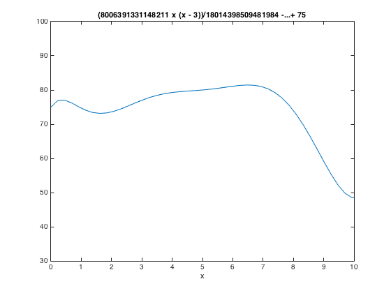
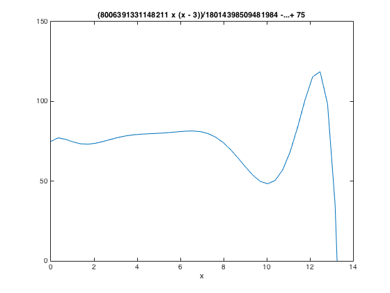
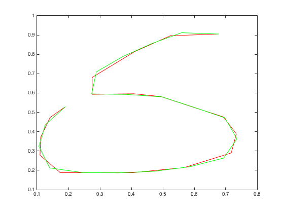
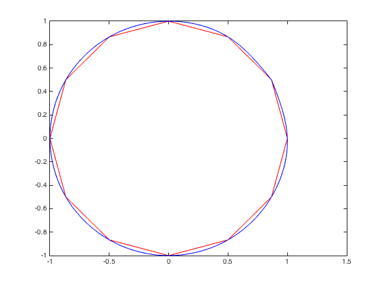

Student - Gurpreet Singh
CSc 301 - HW #3 October 27, 2015
Contents
- Problem 1
- a. Use a Hermite polynomial to predict the position of the car and it's speed when t = 10s.
- The Hermite polynomial generated by the data in the table is
- at t = 10, the position of the car is at ...
- at t = 10, the value of the speed of the car is ...
- b. Use the derivative of the Hermite polynomial to determine whether the car ever exceeds a 55 mph speed limit on the road. If so, what is the first time the car exceeds this speed?
- c. What is the predicted maximum speed for the car?
- Problem 2
- Problem 3
- a. Use natural splines to fit x and y to parameter p for p values from 1 to 10 in increments of 0.1, and this generate a seq. of (x, y) points for plotting the circle
- b. Use a periodicity property of functions cos and sin to generate a periodic spline. compare this spline to natural spline in a) and to the unit circle.
Problem 1
% A car traveling along a straight road is clocked at a number of points. The % data from the obsercations are given in the following table, where the time % is in seconds, the distance is in feet, and the speed is in feet per second. % Time 0 3 5 8 13 % Distance 0 225 383 623 993 % Speed 75 77 80 74 72
a. Use a Hermite polynomial to predict the position of the car and it's speed when t = 10s.
time = [ 0; 3; 5; 8; 13]; distance = [ 0; 225; 383; 623; 993]; speed = [75; 77; 80; 74; 72]; hermite(time, distance, speed);
The Hermite polynomial generated by the data in the table is
% p(x) = 75x + 0.222222*x^2*(x ? 3) ? 0.0311111*x^2*(x ? 3)^2 % ? 0.00644444*x^2*(x ? 3)^2*(x ? 5) % + 0.00226389*x^2*(x ? 3)^2*(x ? 5)^2 % ? 0.00091319*x^2*(x ? 3)^2*(x ? 5)^2*(x ? 8) % + 0.00013053*x^2*(x ? 3)^2*(x ? 5)^2*(x ? 8)^2 % ? 0.00002022*x^2*(x ? 3)^2*(x ? 5)^2*(x ? 8)^2*(x ? 13)
at t = 10, the position of the car is at ...
syms x p = 75*x + 0.222222*x^2*(x - 3) - 0.0311111*x^2*(x - 3)^2 ... - 0.00644444*x^2*(x - 3)^2*(x - 5) ... + 0.00226389*x^2*(x - 3)^2*(x - 5)^2 ... - 0.00091319*x^2*(x - 3)^2*(x - 5)^2*(x - 8) ... + 0.00013053*x^2*(x - 3)^2*(x - 5)^2*(x - 8)^2 ... - 0.00002022*x^2*(x - 3)^2*(x - 5)^2*(x - 8)^2*(x - 13); double(subs(p, x, 10)) % p(10) = 742.5003 approx. 743 feet,
ans = 742.5003
at t = 10, the value of the speed of the car is ...
p_prime = diff(p);
double(subs(p_prime, x, 10))
% p'(10) = 48.3781 approx. 48 feet/sec.
ans = 48.3781
b. Use the derivative of the Hermite polynomial to determine whether the car ever exceeds a 55 mph speed limit on the road. If so, what is the first time the car exceeds this speed?
% 55 mi/h (80.67 ft/s) % looking at the graph below, the value exceeds 80.67 ft/s % approximately, by looking at the graph % --------- 5.64880 --------- ezplot(p_prime, [0,10, 30, 100]) double(subs(p_prime, x, 5.64880))
ans = 80.6666
c. What is the predicted maximum speed for the car?
% looking at the graph of the derivative, the maximum speed of the car occurs somewhere between t = 12 and t = 13. ezplot(p_prime, [0, 14, 0, 150]) double(subs(p_prime, x, 12.3737)) % approximately, by looking at the graph % --------- 12.3737 --------- % and the speed is about % --------- 119.4955 ---------
ans = 119.4955
Problem 2
figure % m = 20 % [x, y] = ginput(m) % got the points below using the ginput x = [0.678571428571429 0.524193548387097 0.411290322580645 0.275345622119816 0.275345622119816 0.406682027649770 0.494239631336406 0.586405529953917 0.692396313364055 0.733870967741935 0.717741935483871 0.567972350230415 0.404377880184332 0.328341013824885 0.243087557603687 0.173963133640553 0.109447004608295 0.111751152073733 0.141705069124424 0.190092165898617]; y = [0.905247813411079 0.896501457725947 0.814868804664723 0.680758017492711 0.593294460641399 0.596209912536443 0.581632653061224 0.532069970845481 0.476676384839650 0.389212827988338 0.290087463556851 0.214285714285714 0.188046647230321 0.188046647230321 0.188046647230321 0.188046647230321 0.278425655976676 0.371720116618076 0.473760932944606 0.529154518950437]; plot(x, y, 'r') hold on [xi, yi] = SplineInPlane(x, y, m); plot(xi, yi, 'g')
Problem 3
% Twelve data points (xi, yi) are given by % xi = cos(pi*i/6) % yi = sin(pi*i/6) % These are obviously points on a unit circle with center at (0, 0). To % close the circle, we get the 13th point whose coord. is identical % to the 1st coord.
a. Use natural splines to fit x and y to parameter p for p values from 1 to 10 in increments of 0.1, and this generate a seq. of (x, y) points for plotting the circle
figure i = linspace(1, 13, 13); x = cos((pi*i)/6); y = sin((pi*i)/6); [a_x, b_x, c_x, d_x] = natural_cubic_spline(i, x); [a_y, b_y, c_y, d_y] = natural_cubic_spline(i, y); % evenly spaced 121 intervals intervals = linspace(1.0, 13.0, 121); for j=1:121 q = 1; for k=1:13 if intervals(j) > i(q+1) q = k; end end t = intervals(j); nth_f = i(q); xx(j) = a_x(nth_f) + b_x(nth_f)*(t - nth_f) + c_x(nth_f)*(t - nth_f)^2 + d_x(nth_f)*(t - nth_f)^3; yy(j) = a_y(nth_f) + b_y(nth_f)*(t - nth_f) + c_y(nth_f)*(t - nth_f)^2 + d_y(nth_f)*(t - nth_f)^3; end plot(x, y, 'r', xx, yy, 'b')